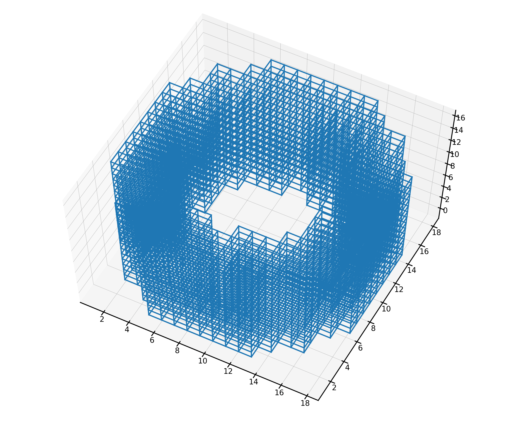

CubicTemplate¶
-
class
openpnm.network.CubicTemplate(*args, **kwargs)[source]¶ Bases:
openpnm.network.Cubic.CubicSimple cubic lattice with arbitrary domain shape specified by a template image
The class creates a standard Cubic network the same shape as the provided image, then trims pores from the network that are not in the mask.
- Parameters
template (array_like) – The array (image) describing the desired shape of the domain. All locations in the image that are marked as
Trueare kept while the rest of trimmed to yeild the shape.spacing (array_like, optional) – The spacing between pore centers in each direction. If not given, then [1, 1, 1] is assumed.
name (string) – An optional name for the object to help identify it. If not given, one will be generated.
project (OpenPNM Project object, optional) – Each OpenPNM object must be part of a Project. If none is supplied then one will be created and this Network will be automatically assigned to it. To create a Project use
openpnm.Project().
Notes
The other arguments are the same as
Cubicexcept thatshapeis inferred from thetemplateimage.See also
The,template_cylinder_annulus,template_sphere_shellExamples
>>> import openpnm as op >>> im = op.topotools.template_cylinder_annulus(15, 10, 5) >>> pn = op.network.CubicTemplate(template=im)
And it can be plotted for quick visualization using:
>>> fig = op.topotools.plot_connections(network=pn)
For larger networks and more control over presentation use Paraview.